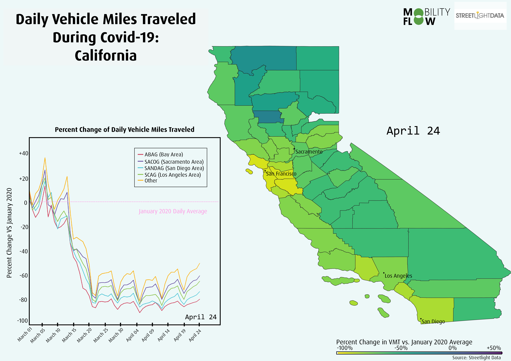

How California Slowed Down:
Monitoring Daily Vehicle Miles in California Since Shelter in Place
Derek Taylor
May 15, 2020
Since the onset of COVID-19, transportation patterns throughout the world have radically shifted. Flights sit empty, once heavily congested corridors now see record lows in traffic, and public transit is used sparingly. Continuing to movement of people and communities will require creative solutions to keep traffic flowing once the shelter in place orders cease.
Accurately monitoring and analyzing how our transportation patterns have already begun to change throughout the pandemic with help guide us towards these creative solutions. With figures from Streetlight Data, a company that processes big data for transportation analysis, we are able to visualize how California has slowed down and reduced vehicle miles traveled (VMT) since the shelter in place orders were put into effect on March 19th.
The map below shows the percent change of daily vehicle miles traveled since the beginning of March, as compared to an average day in January 2020. The chart shows the percent change per Metropolitan Planning Organization, which provides unique insights as to how the regions have differed in response to the pandemic:

Bay Area Slows Quickly: Although Governor Gavin Newsom officially enacted the shelter in place orders on March 19th, it is clear that certain regions began acting on their own before that date. The Bay Area was the first to react to the pandemic and has since had the most dramatic decrease in daily VMT output.
Rural vs Urban:The collection of the 4 MPO’s noted in the chart (ABAG, SACOG, SANDAG, SCAG) represents the most urbanized regions of California. The ‘Other’ line in the chart represents a combination of the other 14 more rural MPO’s. It is clear from this animation that this more rural collection of counties has decreased in percent change of daily vehicle miles traveled the least since the shelter in place orders of March 19.
Shelter Fatigue: A common pattern amongst all of the counties shown in this animation is a slow but steady rise in VMT following the drastic drop on March 19th. Although little has changed about the shelter in place orders, counties are struggling to keep their numbers of daily VMT down to the initial levels of March 19. As protests and other movements to reopen California emerge, this pattern towards normal VMT output will continue.
The extent to which the COVID-19 pandemic will change the movement of people in the next year and beyond is still unknown. One thing is clear: public transit will most likely not be an option for most in the initial rebuilding phase. Additionally, once the shelter in place orders stop, the roads will soon be congested once again. With no transit to turn to, what will remain? Perhaps more people will choose to work from home, others might turn to their bikes or other non-auto modes of transit. Regardless of these answers, it remains important to monitor how the pandemic has already shifted our transportation behavior and to begin thinking of innovative ways to keep cities moving.
Author Biography:
Derek Taylor is a GIS and data analyst for the transportation planning firm Mobility Flow. Mobility Flow is the American branch of the Dutch transportation firm Goudappel Coffeng. Derek currently lives in Amsterdam, working on both Dutch and international projects, where he applies proven Dutch transportation strategies to the international context.